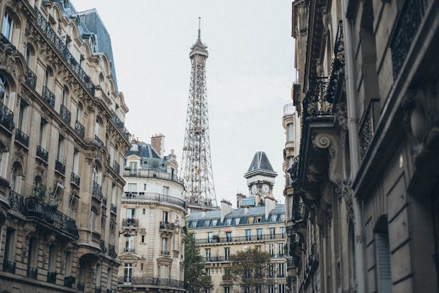

Paris, France
Known as the “City of Light,” Paris is famous for its romantic atmosphere, timeless architecture, and rich cultural heritage.
- Visit the Eiffel Tower
- Explore the Louvre Museum
- Enjoy a Seine River Cruise
Known as the “City of Light,” Paris is famous for its romantic atmosphere, timeless architecture, and rich cultural heritage.

Kyoto offers a glimpse into Japan’s traditional culture, with ancient temples, serene gardens, and centuries-old tea houses.
A tropical paradise with turquoise waters, white sandy beaches, and luxurious overwater villas, perfect for relaxation and water adventures.